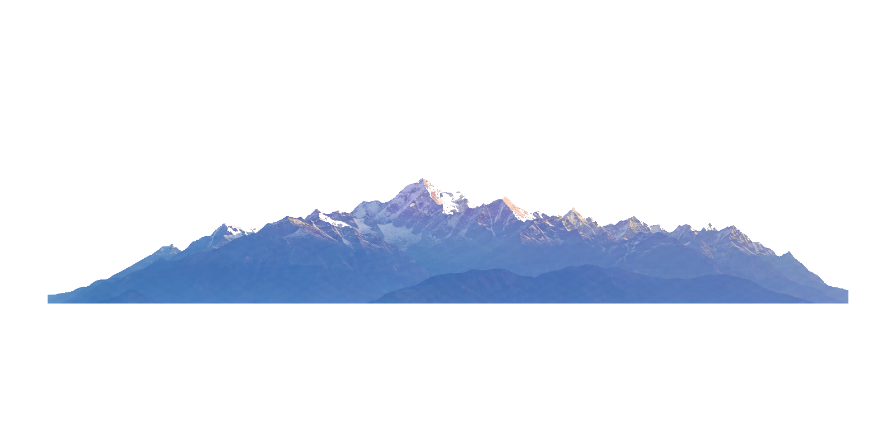

5,897 M · COTOPAXI, ECUADOR
Heal
yourself,
Kawsaypac.
Begin at the summit. Follow living water through the Andes and into the Amazon.
SCROLL TO DESCEND ——



3,100 M · THE LIVING VALLEY
Where water
remembers.
remembers.
Glacial rivers feed the paramo. The paramo feeds everything we harvest.


AMAZON BASIN · ECUADOR
Where the Andes
become Amazon.
become Amazon.
Every blend is wildcrafted here, with the communities who have always known these plants.